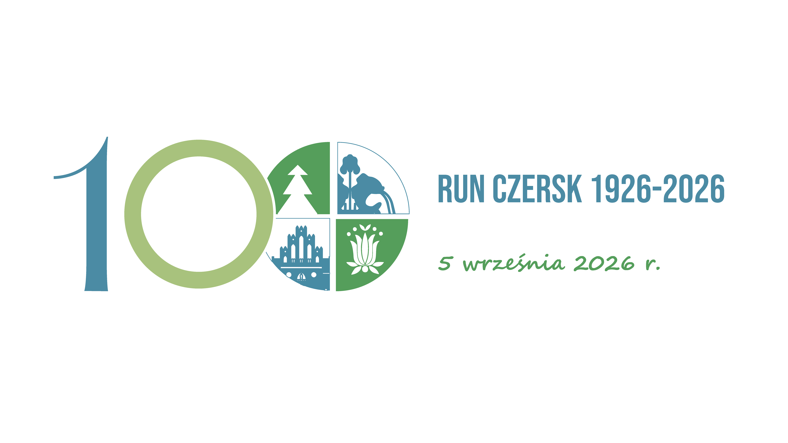
Sto lat temu Czersk stał się miastem. Dziś jesteś częścią tej historii – na trasie przez lasy Borów Tucholskich, przez prehistoryczne Kręgi Kamienne, przez ulice swojego miasta. W 2026 roku świętujemy razem. Wybierz swój dystans i dołącz do jubileuszu.
Zapisz się i biegnij w jubileuszuWejdź na stronę organizatora i wypełnij formularz rejestracyjny
Wybierz jeden lub oba biegi i opłać start (60 lub 80 zł)
W dniu zawodów przyjdź do Biura Zawodów z dowodem tożsamości
Odbierz numer startowy, rozgrzej się i biegnij!
Jedno z największych wydarzeń sportowych w historii gminy Czersk – organizowane z okazji stuletniej rocznicy nadania miastu praw miejskich. Dwa biegi. Dwie trasy. Dwa jubileuszowe medale. Jedno miasto, które w 2026 roku obchodzi swój wiek.
To nie jest zwykły bieg, który pojawia się co roku. To wydarzenie wyjątkowe – zaplanowane specjalnie na ten jubileusz. Jeśli mieszkasz w Czersku, Ostrowitem, Łągu, Odrach, Malachinie czy gdziekolwiek w gminie – to jest Twoje święto. I Twój bieg.
Zarejestruj się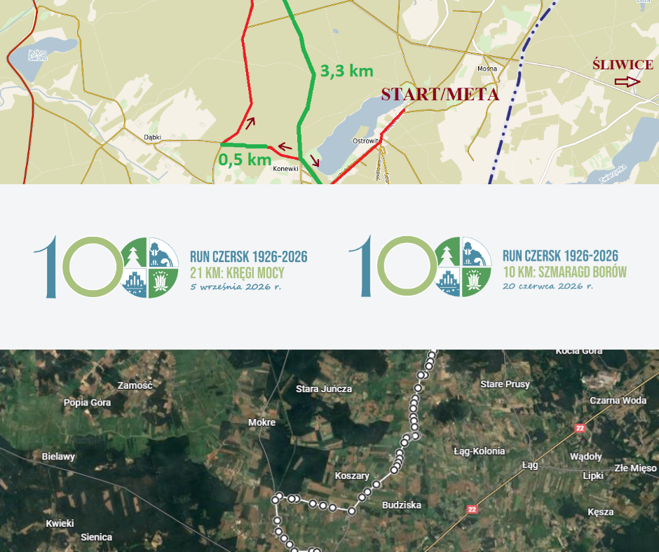
W ramach cyklu RUN CZERSK 1926–2026 odbędą się dwa osobne wydarzenia – każde z własną trasą, atmosferą i charakterem. Możesz wybrać jeden lub oba – a rejestrując się na oba starty, zyskujesz specjalną cenę i medal 100-lecia w kompletnej formie (dwie jego połowy razem tworzą wyjątkową pamiątkę).
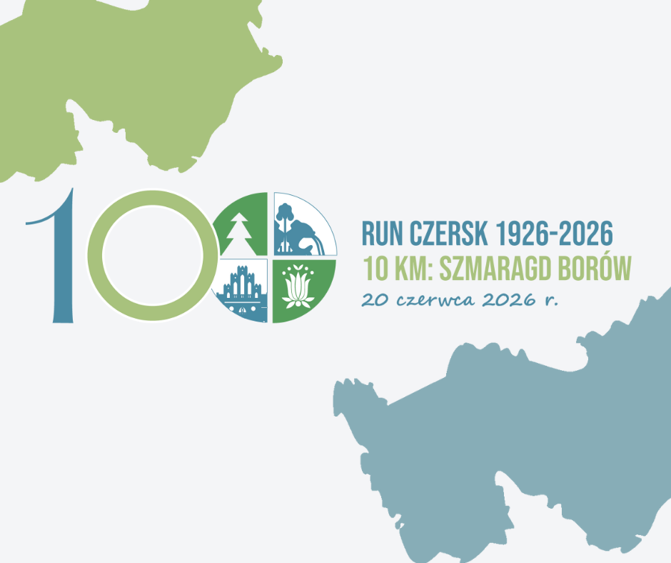
Letni bieg przez serce Borów Tucholskich. Start i meta w Centrum Rekreacji w Ostrowitem nad jeziorem.
Zapisz się – 60 lub 80 zł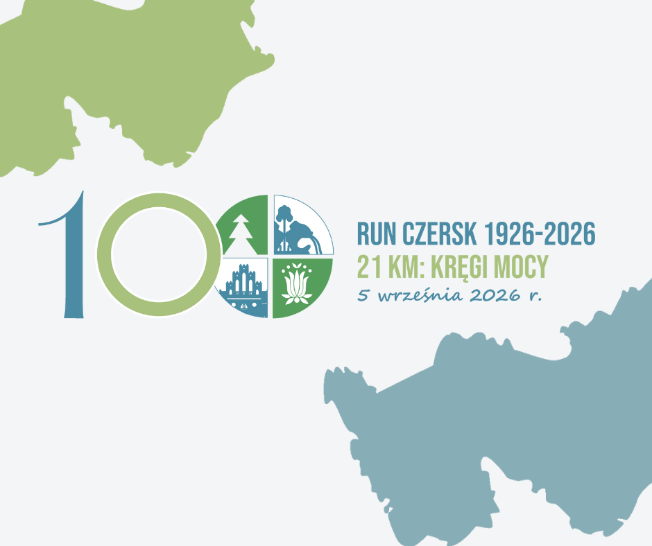
Jubileuszowy półmaraton z prehistorycznych Kręgów Kamiennych do serca Czerska. Meta na Placu Piekarka.
Zapisz się – 60 lub 80 zł| Data | 20 czerwca 2026 r. (sobota) |
| Start | godz. 11:00 | Centrum Rekreacji nad Jeziorem, Ostrowite |
| Meta | Ostrowite (trasa zapętlona – start = meta) |
| Trasa | Ostrowite – Konewki – Dąbki – Ustronie – Konewki – Ostrowite |
| Nawierzchnia | Asfalt 60%, płyty YOMB 15%, grunt leśny 25% |
| Profil trasy | Płaski, bez znaczących przewyższeń – idealna na wynik |
| Punkty z wodą | Na 4 km i 7 km |
| Limit czasowy | 90 minut |
| Biuro Zawodów | Centrum Rekreacji w Ostrowitem | otwarte 9:00–10:45 |
| Limit uczestników | 300 osób (16+) |
| Biegi dziecięce | Tak – tego samego dnia, 6 kategorii (0–15 lat), bezpłatnie |
| Opłata startowa | 60 zł (zapis na oba biegi) | 80 zł (pojedynczy start) |
| Data | 5 września 2026 r. (sobota) |
| Start | godz. 13:00 | Rezerwat Kręgi Kamienne – Odry |
| Meta | Plac Piekarka, Czersk |
| Trasa | Odry → Gotelp → Przyjaźnia → Kamionka → Łubna → Malachin → Czersk |
| Nawierzchnia | Asfalt 75%, tłuczeń 10%, kostka betonowa 10%, płyty YOMB 5% |
| Profil trasy | Płaski z lokalnymi przewyższeniami (Odry, Gotelp, Łubna, Malachin, Czersk) |
| Punkty odżywcze | 3 na trasie (ok. 5, 10, 15 km) + meta |
| Transport na start | Autobus z Pl. Piekarka → Odry | od godz. 11:00, ostatni o 12:15 |
| Limit czasowy | 180 minut (3 godziny) |
| Biuro Zawodów | Plac Piekarka w Czersku | otwarte 9:00–12:00 |
| Limit uczestników | 300 osób (16+) |
| Nagrody finansowe | I–1000 zł | II–700 zł | III–500 zł | IV–200 zł | V–100 zł (K i M) |
| Nagroda specjalna | Dla najlepszego/najlepszej mieszkańca/mieszkanki gminy Czersk |
| Opłata startowa | 60 zł (zapis na oba biegi) | 80 zł (pojedynczy start) |
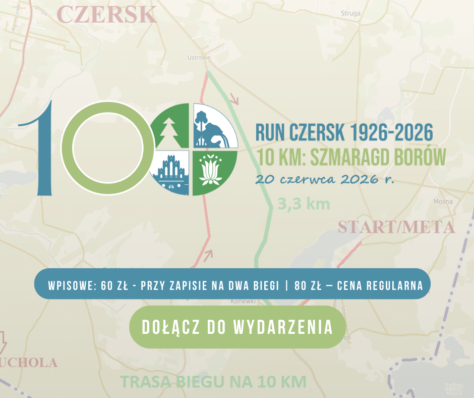
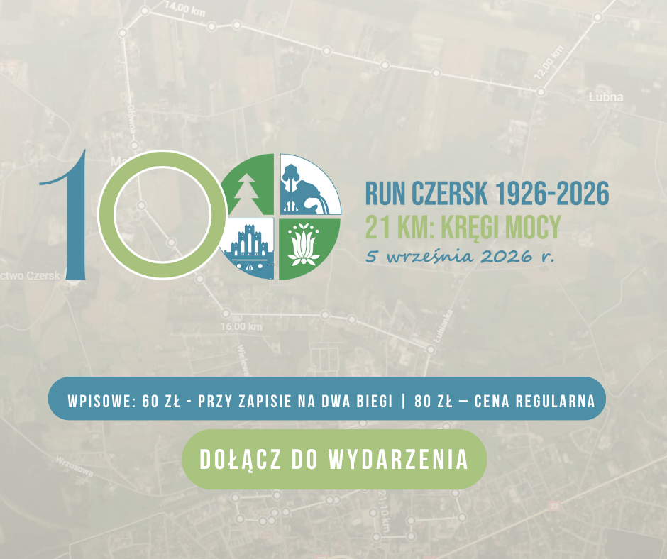
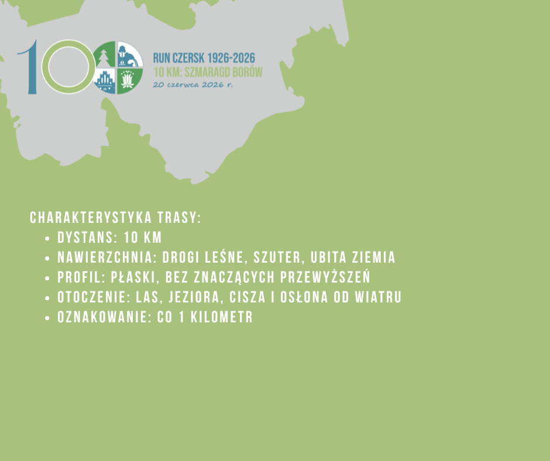
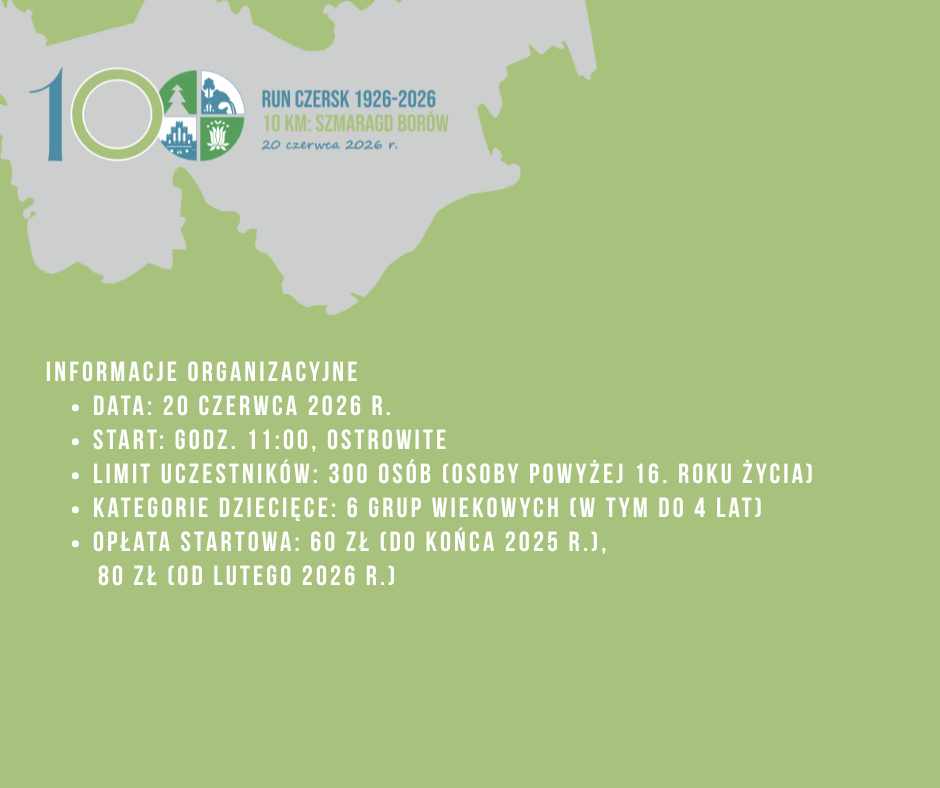
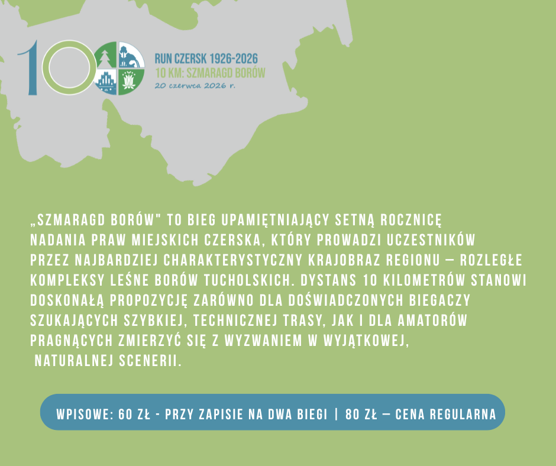
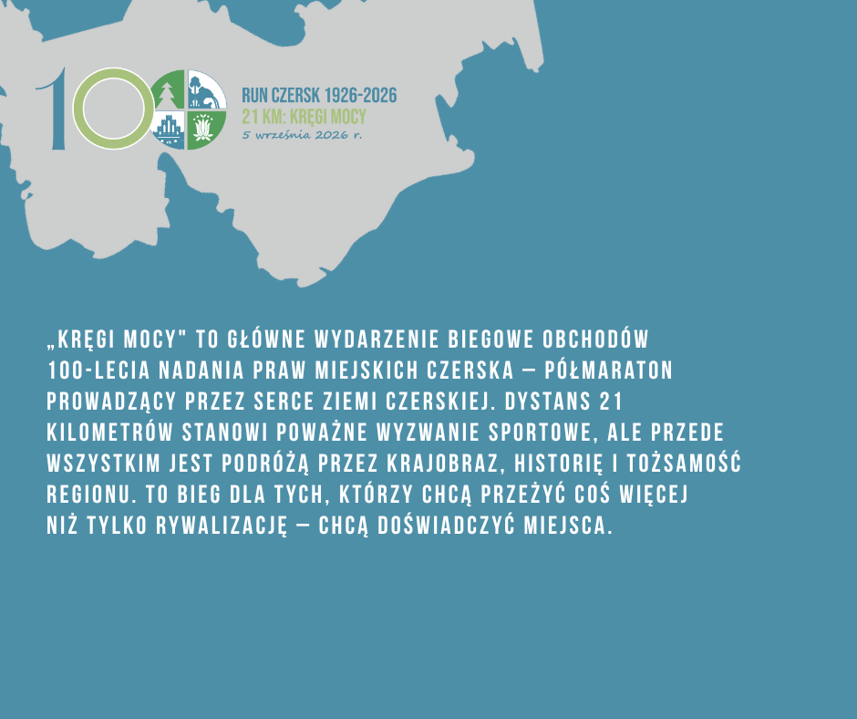
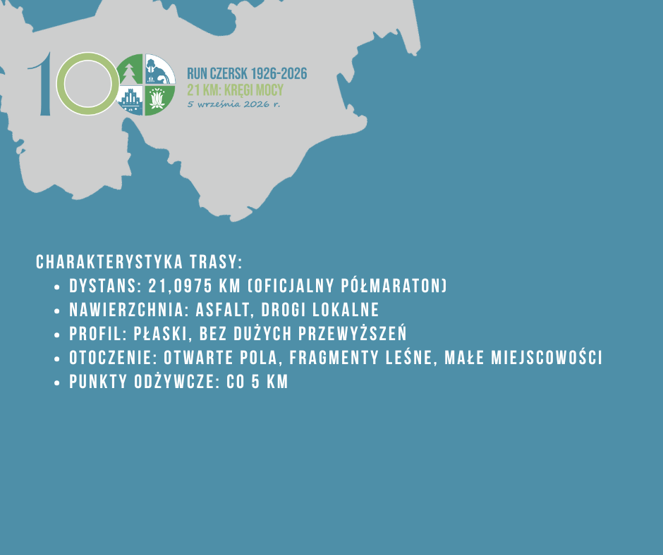
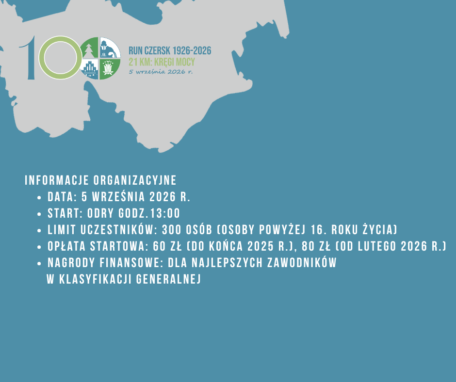
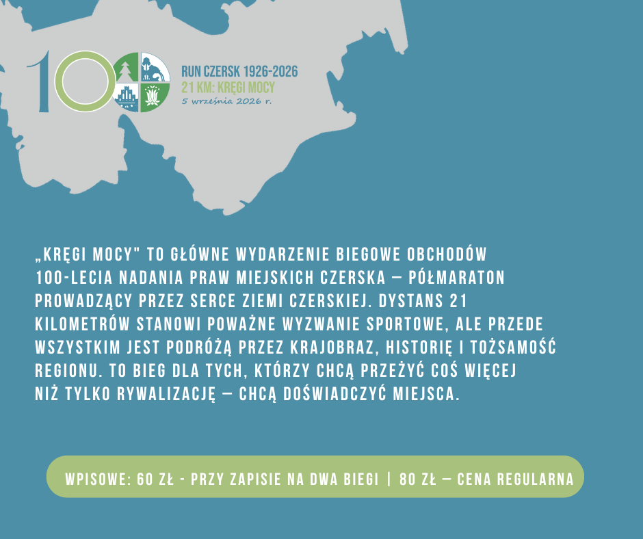
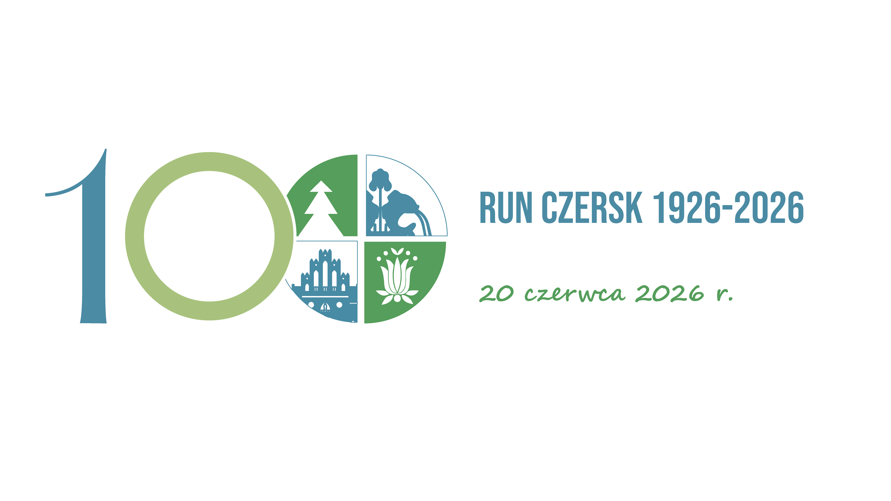
Nie czekaj – miejsca są limitowane (300 na każdy bieg). Zapisz się już teraz i bądź częścią historii Czerska.
Zapisz się teraz